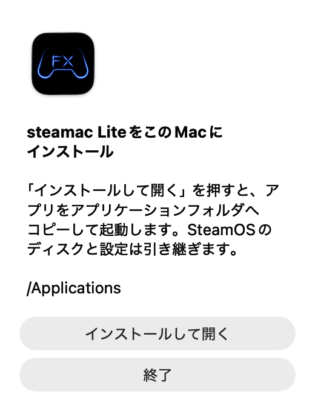

アプリから更新する
Lite.9以降はアプリから更新できます。1.9.8-lite.2以降は起動するたびに確認し、新しい版があれば更新画面を表示します。最新版の場合は表示しません。
- 「アップデートを確認…」を開く
Macの画面上部にある「steamac Lite」メニューから選びます。SteamOS内のSteamのメニューではありません。
- 「アップデート」を押す
新しい版が表示されたら押します。ダウンロードとファイルの検証が終わるまで待ちます。
- 「更新して開き直す」を押す
ゲーム内で必要な保存を済ませてから押します。SteamOSが終了したあとに本体を入れ替え、新しい版を開きます。
更新するのはMac側のアプリ本体です。SteamOSディスク、インストールしたゲーム、既存の設定は保持します。更新のために新しいディスクを作る必要はありません。
DMGから更新する
Lite.8以前を使っている場合や、アプリが起動しない場合はこちらの手順を使ってください。
- 起動中のsteamac Liteを終了する
ゲーム内で必要な保存を済ませ、steamac Liteを終了します。終了処理中なら完了を待ってください。
- 最新版のDMGをダウンロードする
下のボタンからMac用DMGを保存します。GitHubの「Source code」はアプリ本体ではありません。
- 「インストールして開く」を押す
DMGを開き、中の「SteamAC Lite.app」を開きます。案内が出たら「インストールして開く」を押してください。既存のアプリが最新版へ置き換わります。


写真を拡大 ↗BOOTHのネットインストーラーを使う場合も、最新版の本体を取得できます。インストール先は既存のアプリと同じフォルダを選んでください。
更新後にマイクを確認する
Lite.13以降は初回起動と更新後の初回起動で、マイクの確認画面を表示します。許可済みの場合も表示します。 1.9.8-lite.1では「設定 → 音声 → 入力マイク」でマイクを選べます。選択は保存され、Mac全体の標準入力設定は変更しません。設定画面はスクロールとサイズ変更に対応しています。
アプリの確認画面とmacOSの許可画面は別です。OSの許可画面が出るかどうかはmacOSが判断します。
まだ音が入らない場合
- Macの「システム設定 → サウンド → 入力」で使いたいマイクを選び、入力レベルが動くか確認します。steamac LiteはMacの標準入力デバイスを使います。
- 「システム設定 → プライバシーとセキュリティ → マイク」でsteamac Liteの許可を確認します。更新後に使えなくなった場合は、オンでも一度オフにしてからオンにしてみてください。
- steamac Liteの「設定 → 音声」で「もう一度確認」を押します。SteamのマイクテストやVRChat側の入力デバイスも確認してください。
同じ版で確認を済ませたあとは、この案内を繰り返し表示しません。「設定 → 音声」ではいつでも確認できます。
更新できないとき
更新通知が出ない
1.9.8-lite.2以降は、起動するたびに最新版を確認し、新しい版があるときだけ通知します。「設定 → 一般」で自動確認がオンになっていることを確認してください。手動確認は「steamac Lite → アップデートを確認…」から使えます。スキップした版もメニューから確認できます。Lite.8以前はDMGの手順を使ってください。
ダウンロード・検証・入れ替えに失敗する
ネット接続とMacの空き容量を確認し、もう一度試してください。改善しない場合は、起動中のアプリを終了してからDMGの手順で更新します。検証エラーが続く場合は表示された内容を添えてお問い合わせください。
更新後のアプリが開かない
最新版のDMGを開き、アプリケーションフォルダへ入れた本体を使ってください。macOSが起動を確認する画面を出した場合は、入手元を確認して画面の案内に従ってください。改善しない場合は下の項目を添えてお問い合わせください。
解決しない場合は
分かる範囲で次の情報を添えて、GitHubのIssuesかBOOTHからお問い合わせください。
- Macの機種とメモリ容量、macOSのバージョン
- 更新前と更新後のアプリの版番号
- アプリ内更新・GitHubのDMG・BOOTHのどれを使ったか
- 止まる画面や表示されたエラー、可能ならそのスクリーンショット
- マイクの問題なら、内蔵・USB・Bluetoothなどの種類と、Mac側で入力レベルが動くか